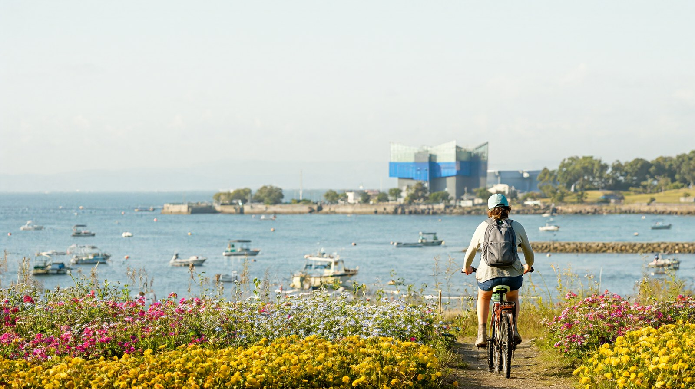

2박 3일에 하루 추가, 해변공원과 마린월드 또는 야나가와 뱃놀이
후쿠오카 3박 4일 가족 일정
성인 2명과 초등 자녀 1명 가족을 기준으로 한 3박 4일 예시입니다. 후쿠오카 2박 3일 총액 예시의 1일차와 2일차를 그대로 쓰고, 3일차에 하루를 더해 '해변공원과 마린월드' 또는 '야나가와 뱃놀이' 중 하나를 고릅니다. 하루 방문지는 2~3곳으로 줄이고 오후에는 숙소에서 쉽니다. 엔화 환산은 100엔 837.70원(2026-10-21, 환율노트) 기준 약 값입니다. 항공편은 오전 도착, 오후 3시 이후 출발을 가정했으며 실제 시각은 항공사 확인 필요입니다. 후쿠오카는 공항에서 하카타역까지 지하철 약 5분이라 도착한 날 오후도 쓸 수 있습니다 (후쿠오카공항 공식).
어떤 3일차를 고를까
| 구분 | 선택 A. 해변공원과 마린월드 | 선택 B. 야나가와 뱃놀이 |
|---|---|---|
| 한 줄 요약 | 수족관과 넓은 공원, 비 와도 수족관은 실내 | 수로를 따라 배로 1시간, 장어찜 점심 |
| 이동 | 하카타에서 JR로 가시이역 환승, 우미노나카미치역까지 약 30~44분 (비공식 정리, 마린월드 공식은 가시이선 20분) | 니시테츠 특급 약 49~52분 (비공식 정리, 확인 필요) |
| 비 오는 날 | 수족관은 실내라 가능 | 겨울 난방 배는 비나 눈이면 운행하지 않는다고 안내됨 (니시테츠 공식) |
| 이런 가족에게 | 아이가 동물과 넓은 곳을 좋아함 | 아이가 배 타기를 좋아하고 이동이 길어도 괜찮음 |
| 예약 | 불필요 (마린월드 디지털 티켓은 선택) | 불필요. 뱃놀이 접수는 15:00 전후 마감 (뱃놀이 운영사 공식) |
일정 한눈에 보기
| 일차 | 방문지 (2~3곳) | 이동 | 예약 필수 | 메모 |
|---|---|---|---|---|
| 1일차 | 앙팡맨 어린이 박물관, 나카스 야타이 | 국제선 터미널, 무료 셔틀, 지하철로 하카타역 약 5분, 나카스카와바타역 | 없음. 앙팡맨 날짜 지정 웹티켓은 선택 | 도착일은 피로 고려. 앙팡맨은 오후가 덜 붐빔 (앙팡맨 공식) |
| 2일차 | 다자이후 텐만구, 참배길 우메가에모치 | 텐진, 니시테츠 후쿠오카 역, 후츠카이치 환승, 다자이후 약 30분 | 없음 | 큐슈 국립박물관(선택)은 월요일 휴관 |
| 3일차 (선택 A) | 마린월드 우미노나카미치, 해변공원 | 하카타, 가시이 환승, 우미노나카미치역, 수족관까지 도보 약 3~5분 | 없음 | 점심은 공원이나 수족관 안 식당. 공원 입장료는 현금만 |
| 3일차 (선택 B) | 야나가와 뱃놀이, 장어찜 점심 | 텐진, 니시테츠 특급, 야나가와 | 없음 | 접수 마감 15:00 전후, 오전 출발 권장 |
| 4일차 | 후쿠오카 타워(선택), 공항 | 하카타역에서 버스 약 25분 (타워 공식), 지하철 공항선, 무료 셔틀 | 없음 | 비행기가 13시 전이면 타워는 생략 |
1일차 흐름 (도착일)
- 오전 도착 후 국제선 터미널에서 무료 셔틀로 국내선 터미널로 이동, 지하철로 하카타역까지 약 5분, 요금 260엔 (하카타역 안내 사이트, 비공식).
- 숙소에 짐을 맡기고 점심은 하카타 라멘 (동네 가게 700~1,000엔대, 비공식 정리).
- 오후에 앙팡맨 어린이 박물관. 나카스카와바타역과 건물 안으로 연결됩니다. 10:00~17:00, 마지막 입장 16:00, 1세 이상 2,000~2,200엔 (앙팡맨 공식). 유모차는 박물관 안에 들일 수 없으니 아기띠가 있으면 편합니다.
- 저녁은 나카스 야타이. 대부분 18:30~19:00에 열고 자정 무렵 닫으며 현금 위주, 화장실이 없습니다 (후쿠오카 시 관광 공식). 아이와는 문 열자마자 가는 편이 대기가 짧습니다.
2일차 흐름 (다자이후)
- 지하철로 텐진역(하카타에서 5분, 210엔, 재팬 가이드)에 가서 니시테츠 후쿠오카(텐진) 역에서 산책 티켓을 삽니다. 어른 1,040엔, 어린이 600엔 (종이, 니시테츠 공식). 자동 개찰구는 쓸 수 없고 역무원에게 보여줘야 합니다.
- 후츠카이치에서 다자이후선으로 갈아타 합계 약 30분 (다자이후텐만구 공식).
- 텐만구는 입장 무료. 폐문은 계절별로 18:30~19:30, 부속 박물관 마지막 입장은 16:00 (다자이후텐만구 공식).
- 참배길에서 우메가에모치 교환권을 씁니다 (산책 티켓에 포함, 니시테츠 공식). 점심 후 14:30쯤 숙소로 돌아옵니다.
3일차 선택 A. 해변공원과 마린월드
- 아침 9시 무렵 하카타역에서 JR 가고시마 본선으로 가시이역(약 11~12분)까지 가서 가시이선으로 갈아타 우미노나카미치역에 갑니다. 대기 포함 합계 약 30~44분 (비공식 정리). 수족관 이용객에게는 JR 우미노나카미치역이 가장 가깝습니다 (공원 공식).
- 마린월드 입관: 보통 9:30~17:30이며 12~2월은 10:00~17:00, 입장은 폐관 1시간 전까지 (마린월드 공식). 성인 2,500엔, 소중학생 1,200엔, 유아(3세~미취학) 700엔 (마린월드 공식). 유모차와 휠체어는 무료 대여(보증금 500엔)이고 수유실은 1곳, 아기용 따뜻한 물도 있습니다 (마린월드 공식).
- 바다사자와 돌고래 쇼: 2027-01-12~04-09는 쇼풀 수리 공사로 쇼가 중단되고 관람석 출입도 안 됩니다 (마린월드 공식). 이 글의 일정(2026년 가을)은 영향이 없습니다. 쇼 시각표는 당일 확인 필요.
- 점심 후 해변공원으로. 입장료는 15세 이상 450엔, 중학생 이하 무료이고 게이트에서 현금만 받습니다 (공원 공식). 대여 자전거는 3시간 성인 600엔, 어린이 400엔이며 예약이 안 됩니다 (공원 공식).
- 15:30쯤 철수해 숙소에서 쉽니다. 공원이 넓어 걷기 부담스러우면 공원 안 버스(3세 이상 1회 300엔, 1일 500엔, 기간 한정 운행, 공원 공식)를 확인하세요.
3일차 선택 B. 야나가와 뱃놀이
- 오전에 니시테츠 텐진 역에서 특급을 탑니다 (약 49~52분, 비공식 정리, 확인 필요). 뱃놀이는 약 1시간, 편도 어른 2,000엔, 어린이(5세~초등) 1,000엔 (뱃놀이 운영사 공식). 접수 마감은 15:00 전후이니 오전에 도착해 접수하세요.
- 전철과 뱃놀이를 묶은 야나가와 관광 티켓: 디지털 어른 3,620엔, 어린이 1,810엔, 종이 3,730엔과 1,870엔 (니시테츠 공식). 2일 유효이고 다자이후 역과 야나가와 역에서만 중간에 내릴 수 있으며, 출발역으로 돌아오면 무효가 됩니다. 이 글은 3일차에 야나가와만 쓰는 구성이라 이 티켓을 사면 2일차 산책 티켓과는 따로입니다.
- 뱃놀이는 편도 코스라 끝나면 무료 셔틀 버스, 시내 버스, 택시로 역에 돌아갑니다 (니시테츠 공식). 점심은 장어찜. 12~2월에는 난방 탁자가 있는 배가 운행하고 비나 눈이 오면 쉽니다 (니시테츠 공식). 배 안 화장실 여부는 확인 필요.
- 15:30 전후 전철로 돌아와 숙소에서 쉽니다.
4일차 흐름 (귀국일)
- 체크아웃 후 짐을 들고 후쿠오카 타워에 가는 선택 코스. 9:30 개장, 성인 1,000엔, 초중학생 500엔 (타워 공식). 버스 요금은 확인 필요.
- 공항 도착 목표(출발 2시간 30분 전)에서 거꾸로 계산해 하카타역에 돌아옵니다.
휴관일 먼저 맞추기
| 시설 | 쉬는 날 | 출처 |
|---|---|---|
| 큐슈 국립박물관, 후쿠오카 시 동식물원 | 월요일 | 니시테츠 공식, 동식물원 공식 (허브 기준) |
| 후쿠오카 시 과학관 | 화요일(화요일이 공휴일이면 개관하고 다음 평일 휴관), 12월 28일~1월 1일. 봄·여름·겨울 방학 기간은 매일 개관 | 과학관 공식 |
| 우미노나카미치 해변공원 | 2026년 11월 10일~12월 30일 매주 화요일, 12월 31일, 1월 1일, 1월 셋째 월요일부터 그 주 금요일까지 | 공원 공식 |
| 마린월드 | 1월 셋째 월요일부터 4일간 (2027년은 1월 18일~21일) | 마린월드 공식 |
오후 휴식 지점
| 일차 | 휴식 지점 | 시간 | 이유 |
|---|---|---|---|
| 1일차 | 숙소 (체크인 후) | 16:30~18:00 | 아침 비행과 앙팡맨 뒤 야타이 전 회복 |
| 2일차 | 숙소 | 14:30~17:30 | 근교 이동 후 아이 낮잠, 저녁은 캐널시티나 하카타역 식당가로 가볍게 |
| 3일차 | 숙소 | 15:30~18:00 | 이동이 긴 날. 저녁은 숙소 근처에서 간단히 |
| 4일차 | 공항 대기 | 체크인 후 | 면세점 구경과 탑승 대기 |
비 오는 날 대안: 선택 A는 마린월드만 보고 공원은 생략합니다 (수족관은 실내). 선택 B가 비라면 A로 바꾸거나 후쿠오카 시 과학관을 씁니다. 과학관 5층 기본 전시실은 어른 510엔, 초중학생 200엔이고 화요일에 쉽니다 (과학관 공식). 앙팡맨 어린이 박물관도 전천후 실내 시설입니다 (앙팡맨 공식).
예약이 필요한 시설
| 시설 | 예약 필요 여부 | 방법과 주의 |
|---|---|---|
| 항공권, 숙소 | 필수 | 출발 전 예약. 항공 가격은 구체 금액 대신 범위만 안내 (총비용 표 참고) |
| 앙팡맨 어린이 박물관 | 불필요 (권장) | 날짜 지정 웹티켓은 입장일 60일 전 10시부터 판매 (앙팡맨 공식) |
| 마린월드 | 불필요 | 디지털 티켓은 선택 (마린월드 공식). 공원 입장료와 묶은 세트권이 판매됨 (공원 공식) |
| 해변공원 자전거 | 예약 불가 | 현장 대여 (공원 공식) |
| 다자이후 텐만구 | 불필요 | 입장 무료 (다자이후텐만구 공식) |
| 야나가와 뱃놀이 | 불필요 | 접수 마감 15:00 전후, 주말에는 대기 가능 (니시테츠 공식) |
| 야타이 | 대부분 불필요 | 예약 받는 가게는 일부 (후쿠오카 시 관광 공식) |
총비용 예시
가족 3인(성인 2, 초등 1) 합계. 선택 A 기준과 선택 B 기준을 나란히 적습니다.
| 항목 | 선택 A 금액 | 선택 B 금액 | 기준 |
|---|---|---|---|
| 항공 | 약 54~105만원 | 약 54~105만원 | 1인 왕복 약 18~35만원, 인천 출발 직항 왕복, 위탁수하물 별도. 2026-09~10월 항공권 검색 사이트 표시 범위 (카약, 호텔스컴바인). 어린이 운임은 같다고 가정, 확인 필요 |
| 숙박 | 약 21~54만원 | 약 21~54만원 | 3박, 방 1개, 1박 약 7~18만원 (2박 3일 글과 같은 가정, 3인실은 더 높을 수 있어 확인 필요) |
| 식비 | 약 35.2~55.3만원 (42,000~66,000엔) | 같음 | 1인 1일 3,500~5,500엔 가정 x 4일 x 3인. 가정치 |
| 교통 | 약 9.2만원 (10,990엔) | 약 13.8만원 (16,440엔) | 공통 7,390엔(2박 3일 글과 같은 상한 계산). A는 JR 왕복 3인 3,600엔을 가정치로 더함(요금은 확인 필요). B는 야나가와 관광 티켓 디지털 9,050엔(어른 3,620엔 x 2 + 어린이 1,810엔, 뱃놀이 포함, 니시테츠 공식)을 더함 |
| 입장료 | 약 11.0~11.5만원 (13,100~13,700엔) | 약 5.0~5.5만원 (6,000~6,600엔) | 공통 앙팡맨 1인 2,000~2,200엔 x 3인. A는 마린월드 6,200엔(2,500 x 2 + 1,200)과 공원 900엔(450 x 2, 초등은 무료) 추가 (각 공식). B는 뱃놀이가 교통 칸 티켓에 포함 |
| 합계 | 약 130~235만원 (1인 약 43~78만원) | 약 129~234만원 (1인 약 43~78만원) | 후쿠오카 타워, 선물, 환전 수수료, 위탁수하물 제외 |
두 선택의 총액 차이는 1만원 안팎이라 비용보다 취향과 날씨로 고르면 됩니다. 항공 확인 방법: 항공권 비교 사이트에서 날짜별 가격과 위탁수하물 포함 총액을 비교하세요. 어린이 운임, 수하물, 좌석 지정은 항공사 확인 필요입니다.
귀국 동선
- 체크아웃 후 하카타역에서 지하철 공항선으로 국내선 터미널역까지 약 5분 (후쿠오카공항 공식).
- 지하철 출구 1A 또는 2A에서 1층으로 올라가 1번 승강장에서 무료 셔틀로 국제선 터미널로 이동합니다. 낮에는 5~6분 간격 (후쿠오카공항 공식 시각표).
- 국제선 터미널 3층에서 체크인합니다. 마감 시각은 항공사별로 확인 필요이며, 이 글은 출발 2시간 30분 전 도착을 권장합니다 (편집 판단).
- 면세: 2026-11-01 이후 구매분은 세금 포함가로 사고 출국 때 세관 확인 후 환급받는 방식입니다. 세금 제외 기준 5,000엔 이상, 구매 90일 이내 출국 조건이며 후쿠오카공항에 단말기가 있습니다 (일본 세관 공식). 수하물을 부치기 전에 절차를 마치라는 안내가 있습니다 (면세 안내 사이트, 비공식). 2026-10-31까지 구매분은 기존 방식입니다. 단말기는 수하물을 맡기기 전 국제선 출발 로비에 설치되고, 후쿠오카공항은 Visit Japan Web 온라인 절차를 보안검색 전까지 할 수 있습니다 (일본 관광청 공식). 단말기의 정확한 위치와 운영 시간은 확인 필요.
- 보안검색 전에 엔화 잔액을 쓰고, 짐 무게는 항공사 규정을 확인하세요.
확인 필요 항목
- 항공 운임(어린이 운임 포함), 위탁수하물, 3인실 숙박 요금: 출발 전 확인.
- JR 하카타에서 우미노나카미치까지의 요금(총비용 표는 가정치 3,600엔), 마린월드 쇼 시각표.
- 마린월드 쇼 재개: 공식 안내는 2027-01-12~04-09 중단까지만 확인되며, 4월 10일 이후 재개 일정은 별도 공지를 확인해야 합니다. 공식 공지에는 공사 진행에 따라 재개가 앞당겨질 수 있다고만 적혀 있고 구체적인 재개일은 없습니다 (마린월드 공식).
- 니시테츠 특급의 야나가와까지 소요시간과 요금, 뱃놀이 배 안 화장실 여부. 시도한 출처: 니시테츠 공식 관광 페이지(접속 시 404), 디지털 승차권 페이지(소요시간 없음). 운임 검색 사이트에는 특급 약 49분, 960엔이 나오나 비공식이라 본문 값은 그대로 둡니다. 배 안 화장실은 운영사 공식 페이지에서 정보를 찾지 못했습니다.
- 후쿠오카 타워행 버스 요금(타워 공식 접근 안내에 요금이 없고 니시테쓰 공식 요금 페이지는 확인하지 못함), 면세 단말기의 정확한 위치와 운영 시간(관광청 공식은 수하물 위탁 전 국제선 출발 로비라고만 안내하고 후쿠오카공항 공식 페이지에 세부 정보 없음), 항공사 체크인 마감(후쿠오카공항 공식이 항공사별로 다르다고 안내, 항공사 미지정).
- 숙박과 식비는 출처 없는 가정치입니다.
공식 출처
- 후쿠오카공항: https://www.fukuoka-airport.jp/en/target/beginner.html
- 마린월드 요금과 시간: https://marine-world.jp/general-guide/regular-fees/ , https://marine-world.jp/general-guide/hours/ , https://marine-world.jp/access/
- 우미노나카미치 해변공원: https://uminaka-park.jp/guide/open-hour/ , https://uminaka-park.jp/access/
- 니시테츠 야나가와 관광 티켓: https://www.ensen24.jp/kippu/en/dazaifu-yanagawa/
- 야나가와 뱃놀이 운영사: https://www.yanagawakk.co.jp/index_e.html
- 앙팡맨 어린이 박물관: https://www.fukuoka-anpanman.jp/guide/
- 다자이후텐만구: https://www.dazaifutenmangu.or.jp/en/plan/faq
- 후쿠오카 시 과학관: https://www.fukuokacity-kagakukan.jp/use/
- 후쿠오카 타워: https://www.fukuokatower.co.jp/charge
- 일본 세관: https://www.customs.go.jp/kaigairyoko/taxrefund_e.html
- 비공식 참고: 하카타역 안내 사이트, 재팬 가이드, 환율노트, 카약, 호텔스컴바인, 가족 여행 안내 블로그(bigfamilyjapan.com)